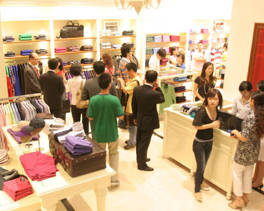
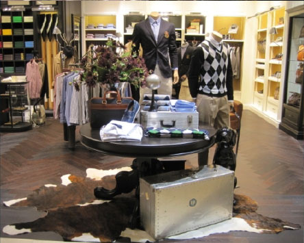

HISTORY British Style, For your Urban Life
ABOUT HAZZYS
남성 브리티시 트래디셔널 캐주얼 브랜드로 출발한 HAZZYS는 곧 이어 Ladies, Accessories, Golf 등 다양한 영역으로 라인을 확장하며 도시적이면서도
생동감 넘치는 어반 브리티시 룩을 선보여왔다. 로잉이라는 스포츠에 브랜드 헤리티지를 둔, HAZZYS만의 세련된 캐주얼 스타일은 비즈니스 미팅, 액티브한
야외 활동, 주말 여행 등 다양한 이벤트로 늘 분주한 현대인의 루킹을 한층 근사하게 완성시켰다. HAZZYS는 스타일뿐 아니라 문화와 예술 분야에도 커다란
관심을 쏟았다. 다양한 장르의 신진작가를 발굴해 후원하며, 세계적인 아티스트와 탁월한 콜라보레이션을 펼쳤다. 커뮤니티를 형성해 고객에게 HAZZYS만의
문화를 소개하고 또 함께 소비하며 새로운 HAZZYS 컬처를 만들었음은 물론이다. 이제 HAZZYS는 탁월한 해외 아웃소싱과 제휴를 통해
글로벌 레이블로 도약해 더욱 사랑 받는 브랜드로 성장해 나간다.
생동감 넘치는 어반 브리티시 룩을 선보여왔다. 로잉이라는 스포츠에 브랜드 헤리티지를 둔, HAZZYS만의 세련된 캐주얼 스타일은 비즈니스 미팅, 액티브한
야외 활동, 주말 여행 등 다양한 이벤트로 늘 분주한 현대인의 루킹을 한층 근사하게 완성시켰다. HAZZYS는 스타일뿐 아니라 문화와 예술 분야에도 커다란
관심을 쏟았다. 다양한 장르의 신진작가를 발굴해 후원하며, 세계적인 아티스트와 탁월한 콜라보레이션을 펼쳤다. 커뮤니티를 형성해 고객에게 HAZZYS만의
문화를 소개하고 또 함께 소비하며 새로운 HAZZYS 컬처를 만들었음은 물론이다. 이제 HAZZYS는 탁월한 해외 아웃소싱과 제휴를 통해
글로벌 레이블로 도약해 더욱 사랑 받는 브랜드로 성장해 나간다.
2007
HAZZYS 중국 진출
2007년 9월 10일, 중국 1호 매장이 오픈했다.
중국 3대 신사복 레이블을 보유한 ‘빠오시냐오 그룹’과 라이센스 계약을 체결하고 윈저우 1호점을 시작으로 상하지, 베이징, 난징 등 중국 주요 도시에 5~6개의 매장을 추가 오픈했다.
윈저우 헤지스 매장은 약 100평형의 규모로 윈저우 쇼핑 중심지인 ‘쟈러광장’에 위치하고 있다.

2007 HAZZYS 중국 진출
2007
CULTURE CLUB 발족
브랜드를 사는(Living and Buying) 사람들이 헤지스 컬처 클럽으로 모였다.
컬처 클럽은 브랜드와 소비자가 함께 헤지스의 문화와 가치를 탐험하고 소비하며 생산하는 특별한 커뮤니티로, 브랜드 헤리티지를 직접 경험하고 다양한 문화 행사에 참여했다.
2007 HAZZYS ACCESSORIES 론칭
2007 HAZZYS ACCESSORIES 론칭
헤지스액세서리가 단독 레이블로 론칭하며 맨과 레이디스 라인에 액세서리까지 갖춘 토털 브랜드로서의 시작을 알렸다.
영국적인 헤리티지를 잃지 않으며 클래식하고 모던한 도시적인 백과 스몰레더 굿즈 등 보다 확장된 액세서리 라인이 헤지스액세서리 레이블을 달고 출시했다.
2009
HAZZYS GOLF 론칭
헤지스골프는 헤지스의 전통적인 브리티시 헤리티지와 함께 골프웨어로서의 기능적 측면을 부각시킨 제품을 차례로 선보였다.
대표 상품인 ‘매직 시리즈’ 티셔츠는 최첨단 기능성 소재에 골퍼들의 움직임을 고려한 입체 패턴을 적용해 완벽한 스윙을 할 수 있도록 고안되었다.
2009
HAZZYS 케임브리지 로잉클럽 출시
헤지스는 론칭 10주년을 기념하며 ‘영국 정통 브리티시 캐주얼’이라는 브랜드 정체성 강화 전략을 위해 처칠 컬리지 보트클럽(Churchill College Boat Club), 뉴넘 컬리지 보트클럽(Newnham College Boat Club), 피터하우스 보트클럽(Peterhouse Boat Club) 등 케임브리지 대학 내 5개 로잉 클럽과 공식적인 제휴를 맺었다.
각 클럽을 상징하는 문장, 숫자, 문구, 컬러를 다양하게 활용한 ‘케임브리지 로잉 클럽’ 라인은 로잉 스포츠의 도전 정신과 명예 의식이 그대로 담긴 재킷과 셔츠, 스웨터, 팬츠 등으로 구성된다.
2010 HAZZYS MEN 슈즈 라인 론칭
2010 HAZZYS MEN 슈즈 라인 론칭
헤지스에서 처음으로 선보이는 슈즈는 스타일리시한 남성들의 까다로운 니즈를 만족시켰다.
클래식한 포멀 룩과 고급스러운 캐주얼 룩에 모두 연출 가능한 가죽로퍼 2종과 경쾌하고 스포티브한 스니커즈 2종으로 선보인 헤지스 슈즈는 잉글리시 포인터 심볼과 엠블럼으로 포인트를 주었다.
2010
HAZZYS MEN 현대백화점
목동 스토어 오픈
목동 스토어 오픈
헤지스의 첫 번째 플래그십 스토어가 현대백화점 목동점에 오픈했다.
캐시미어가 함유된 울 소재, 슈피마 코튼 등 해외 최고급 소재를 사용한 헤지스 프리미엄 라인과 새로운 슈즈 라인,
프랑스와 이탈리아에서 공수한 레더 굿즈 등을 한자리에서 선보여 토털 코디네이션 제안이 가능한 매장이다.

2010 HAZZYS MEN 현대백화점
목동 스토어 오픈
목동 스토어 오픈
2010
신진작가 공모전 개최
순수미술, 디자인, 포토, 일러스트, 설치미술, 건축, 팝아트 등 전 예술 분야에 걸쳐 신인 아티스트를 발굴하고 후원하는 신진작가 공모전이 개최됐다.
영애의 1등 수상자에게는 영국 알링턴 하우스에 마련된 '헤지스 스튜디오'를 통해 3개월여 동안 작품 활동과 생활비를 지원하며, 2등 수상자에게는 런던의 문화 투어 기회를,
3등 수상자에게는 100만원 상당의 헤지스 의류교환권을 제공한다. 2011년과, 2012년 두 회에 걸쳐 진행되었으며, 선정된 작품은 2012년 세종문화회관에 전시되었다.